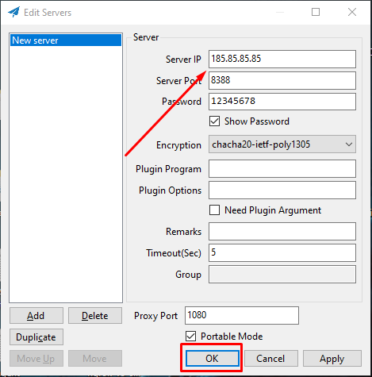
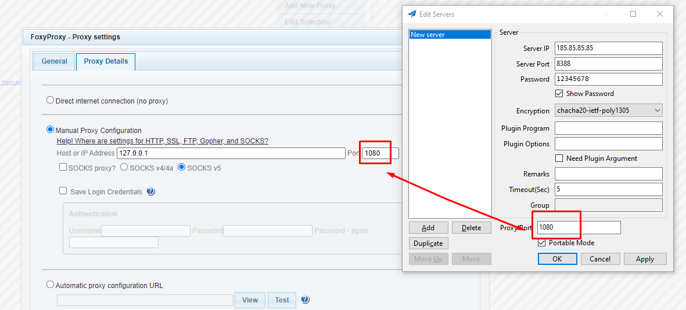
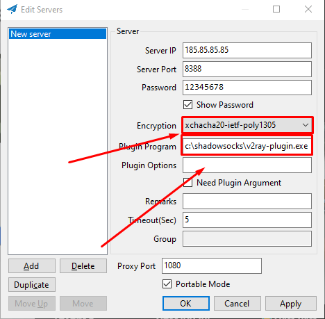

Server Shadowsocks Classic
First uprgade system
apt update && apt uprgade -y
Install need packets
apt install shadowsocks-libev -y
View what your ip address
ip -br a
Edit options parametrs you can change port and all ip "::1", "127.0.0.1" for example “185.85.85.85”
nano /etc/shodowsocks-libev/config.json
{
"server":["::1", "127.0.0.1"],
"mode":"tcp_and_udp",
"server_port":"8388",
"local_port":"1080",
"password":"12345678 ",
"timeout":"60",
"method":"chacha20-ietf-poly1305"
}
{
"server":["185.85.85.85"],
"mode":"tcp_and_udp",
"server_port":"8388",
"local_port":"1080",
"password":"12345678 ",
"timeout":"60",
"method":"chacha20-ietf-poly1305"
}
after change restart service:
service shadowsocks-libev restart
and see status:
service shadowsocks-libev status
after status active add shadowsocks to autorun after restart:
systemctl enable shadowsocks-libev
V2Ray Plugin
Download plugin for VPS
https://github.com/shadowsocks/v2ray-plugin/releases
need togo to shadowsocks folder
cd /etc/shadowsocks-libev/
wget https://github.com/shadowsocks/v2ray-plugin/releases/download/v1.3.2/v2ray-plugin-linux-amd64-v1.3.2.tar.gz
repacket him
tar -xvf v2ray-plugin-linux-amd64-v1.3.2.tar.gz
remove zip file
rm v2ray-plugin-linux-amd64-v1.3.2.tar.gz
rename
mv v2ray_plugin-linux_amd64 v2ray-plugin
and edit
nano /etc/shodowsocks-libev/config.json
{
"server":["185.85.85.85"],
"mode":"tcp_and_udp",
"server_port":"8388",
"local_port":"1080",
"password":"12345678 ",
"timeout":"60",
"method":"xchacha20-ietf-poly1305",
"nameserver":"1.1.1.1",
"no_delay": true,
"fast_open": true,
"reuse_port": true,
"plugin":"/etc/shadowsocks-libev/v2ray-plugin",
"plugin_opt":"server"
}
after change restart service:
service shadowsocks-libev restart
Client Shadowsocks Classic
Download and unzip
https:github.com/shadowsocks/shadowsocks-windows/releases
add ip server, port and password

If you want you can add to proxy for web-browser
Download Foxy Proxy from Chrome Extensions

Client to V2Ray for Windows
https://github.com/shadowsocks/v2ray-plugin/releases
Download and unzip rename to v2ray-plugin.exe
https://github.com/shadowsocks/v2ray-plugin/releases/download/v1.3.2/v2ray-plugin-windows-amd64-v1.3.2.tar.gz
and replace to shadowsocks folder c:\shadowsocks\v2ray-plugin.exe

Client For Android Shadowsocks+V2Ray
shadowsocks can download from GooglePlay
and plugin V2Ray from f-droid
https://f-droid.org/en/packages/com.github.shadowsocks.plugin.v2ray/